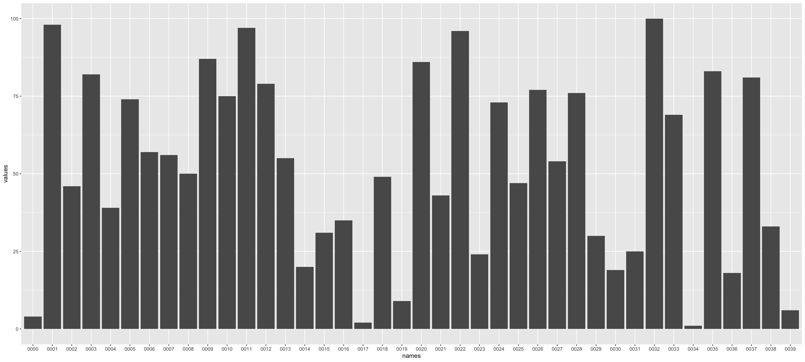
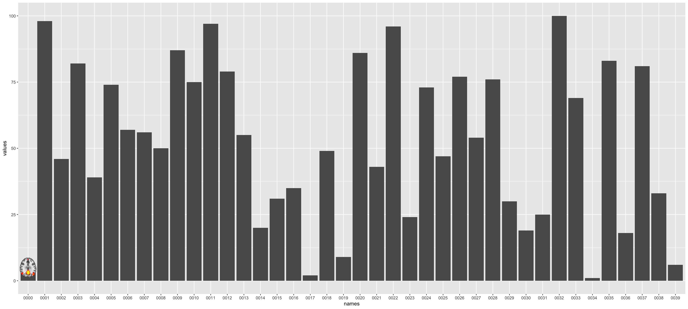
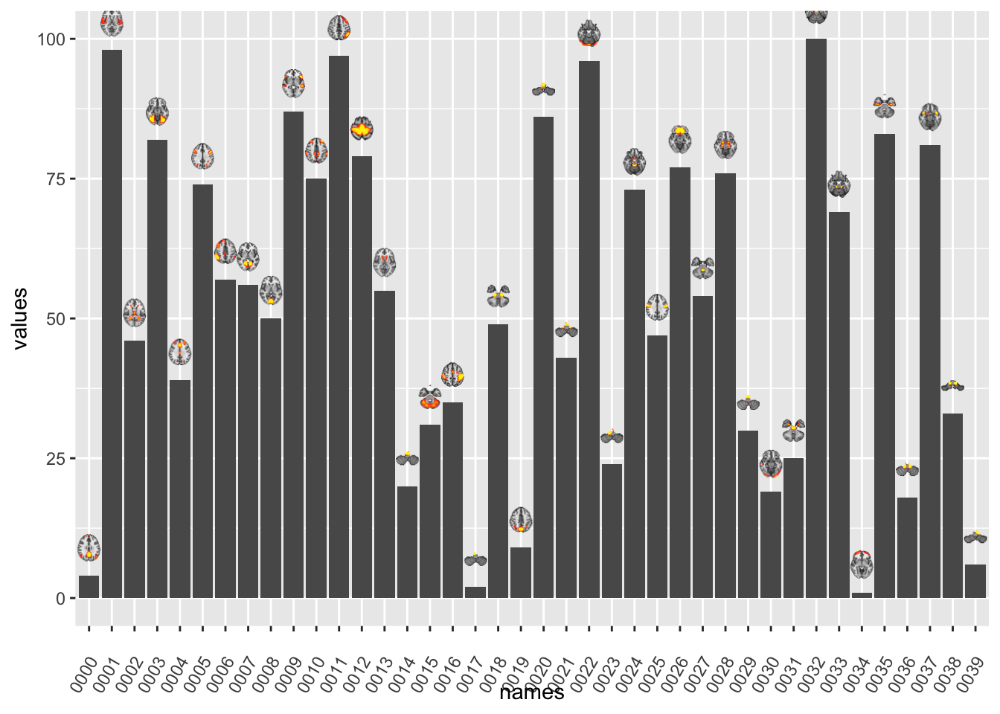
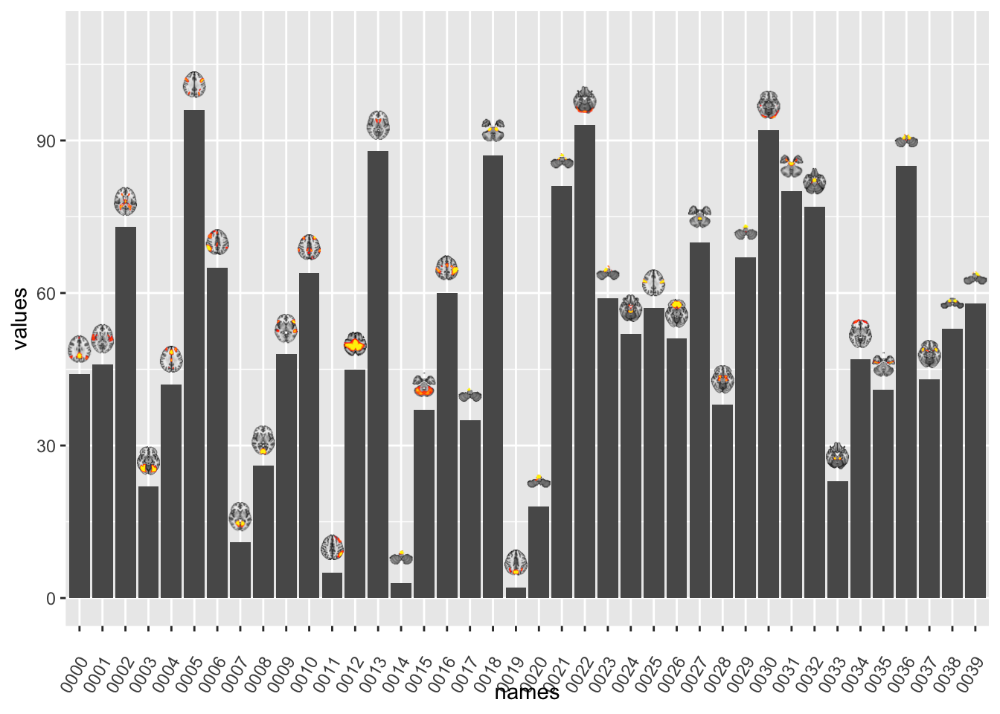
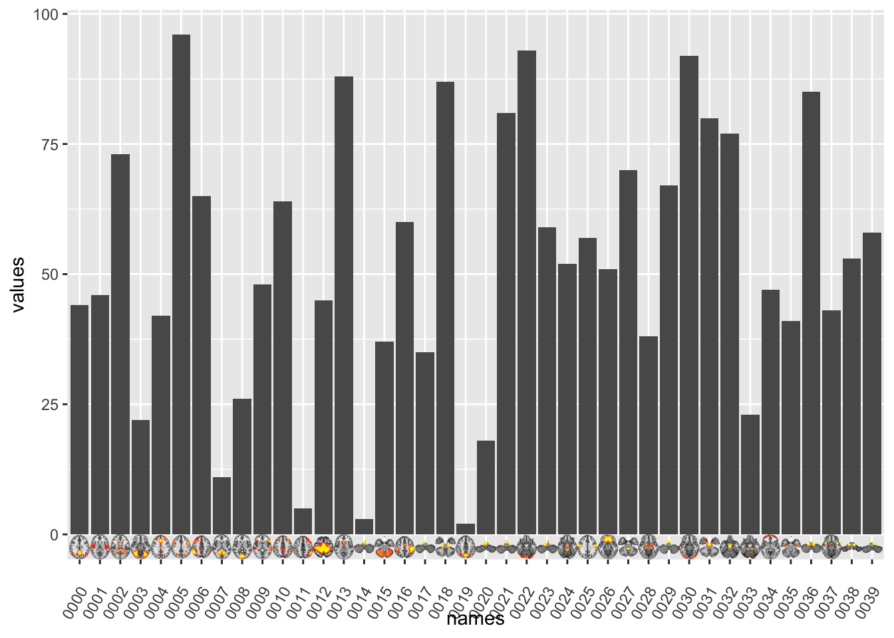
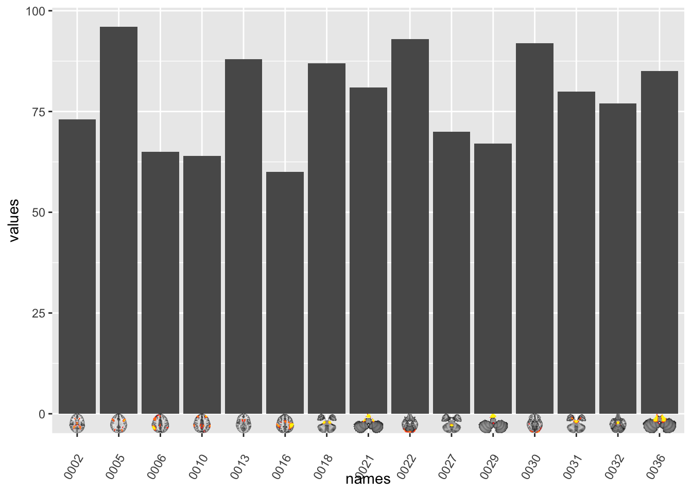
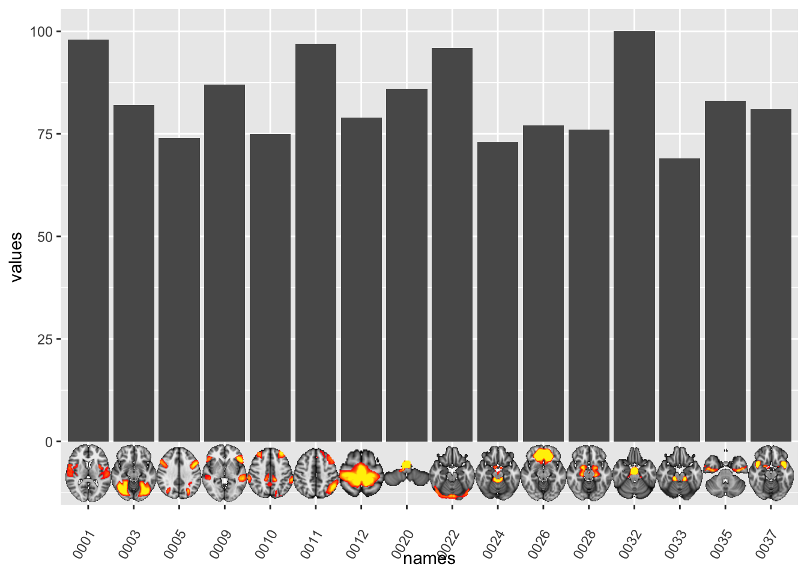

Blog
Adding external images to plots
Two weeks ago we had out first RLadies-Oslo meetup! It was such a great turnout, and I had so much fun presenting to the group of lovely folks!
First @RLadies_Oslo meetup with @DrMowinckels: "I love plotting" ♥️ #rstats #Rladies pic.twitter.com/UTS5QCy3HE
— Lene Drøsdal (@ldrosdal) April 23, 2018
And indeed it is true, I love plotting. Probably more than I love analysing data (and definately more than cleaning and wrangling :P). I can spend hours and hours creating my own custom plotting functions for whatever paper/output I am currently working on. I’m not sure if this is a productive way of spending my time, but it’s fun and instantly grattifying.
Given that I’m in neuroimaging, I actually quite often find myself in need of adding neuroimages (brains!) to my plots, to aid interpretation and the reader. Having the data plotted, with the brain images that correspond to the data, is a good way to showcase results, and make it easier both for me and my reader to understand what the findings are.
When wanting to add external images to plots, there are several necessary steps:
- You need to create all the images you might want to add, place them in a folder, and give the images names (drop the whitespaces) that make sense according to the data you have.
- The images might need to be processed to make plotting easier (i.e. them being the same size, backgrounds transparent etc.) I use ImageMagick for this, but there are R-packages to help, like imager
- A clear idea of what you want to plot and why
- how comes with trial-and-error and perserverence (and hopefully with the help of this post)
The Data
All my images have been extracted with a neuroimaging analysis software I regularly use; [FSL](). FSL provides all brains on black backgrounds, which I have stripped so they are transparent, for nicer plotting. I’ll leave out image manipulation from this post, I’m planning something on that later.
I have all my images in a folder called single which is within a folder called brainSlices. First of all, we need to read in the paths for all the files we want to add, so having them stored all within a folder, with nice naming conventions, makes life easier. I’ll place them all in a data.frame I’ll call DATA in a columns names images.
DATA = data.frame(images=list.files("brainSlices/single", full.names = T), stringsAsFactors = F)
head(DATA)## images
## 1 brainSlices/single/0000_trans.png
## 2 brainSlices/single/0001_trans.png
## 3 brainSlices/single/0002_trans.png
## 4 brainSlices/single/0003_trans.png
## 5 brainSlices/single/0004_trans.png
## 6 brainSlices/single/0005_trans.pngMy files a pretty simple, numbered images, corresponding to some brain network. Now that I have all the image file paths nicely stored, I’ll also generate som decent names for the images, so that we an plot them with labels.
I’ll strip the filepaths for everything that is not numeric, so I can have only the numbers (of course, these are so nicely ordered I could have generated a sequence of numbers).
DATA$names = gsub("[a-zA-Z]|[[:punct:]]","",DATA$images)
head(DATA)## images names
## 1 brainSlices/single/0000_trans.png 0000
## 2 brainSlices/single/0001_trans.png 0001
## 3 brainSlices/single/0002_trans.png 0002
## 4 brainSlices/single/0003_trans.png 0003
## 5 brainSlices/single/0004_trans.png 0004
## 6 brainSlices/single/0005_trans.png 0005We also generate some random values that we assign to the brain networks, so we have some values to plot!
DATA$values = sample(1:100, size=nrow(DATA))
head(DATA)## images names values
## 1 brainSlices/single/0000_trans.png 0000 19
## 2 brainSlices/single/0001_trans.png 0001 24
## 3 brainSlices/single/0002_trans.png 0002 22
## 4 brainSlices/single/0003_trans.png 0003 51
## 5 brainSlices/single/0004_trans.png 0004 47
## 6 brainSlices/single/0005_trans.png 0005 70Let’s do some plotting!
I always start out with what the data plot will look like first, then add inn the images last. This is the easiest process, in my opinion. So, we make a bar chart of the values for each network on the y-axis, and each network on the x-axis. We use the stat="identity" option, because we want to plot the actual value provided on the y, not a count of the x-axis occurence, which is default bar chart behaviour.
library(ggplot2)
ggplot(DATA) + geom_histogram(aes(x=names, y=values), stat="identity")## Warning: Ignoring unknown parameters: binwidth, bins, pad
That’s a bar chart alright! Ok, let’s increase complexity by adding one image to begin with. The function I use to add external images is annotate_custom which is the only ggplot function I have found that will do what I want. But first, we will need to actually read in the image from it’s filepath, transform it into a graphics object grob within R, so that we may plot it. For this we need both the png and grid packages.
library(png); library(grid);we read in the png from the first file into a variable.
img = readPNG(DATA$images[1])And transform it into a graphics object (grob)
g = rasterGrob(img, interpolate=TRUE)Now that it’s a graphics object, we can place it in the plot. annotate_custom requires a placement of the object just like a rectangle would, xmin, xmax, ymin and ymax, this works well for us, as our images are rectangles (even with transparent backgrounds).
Given that this is a bar chart, where each element on the x is centered on an integer, I’m using xmin and xmax on x -/+ 0.5, to get the image in the right spot. The y really depends on the aspect ratio of your image, trial-and-error is usually needed to get it in the right size.
ggplot(DATA) +
geom_histogram(aes(x=names, y=values), stat="identity") +
annotation_custom(grob=g, xmin=.5, xmax=1.5, ymin=0, ymax=10)## Warning: Ignoring unknown parameters: binwidth, bins, pad Whoop! Brain in plot! Now, let’s get them all in there! I do this in for loops, because I just don’t know any other way to do it. If you do, post me a comment. I’ll be so thankful for a more elegant solution!
Untill then, let’s get for-looping. First, save the base plot to an object in your environment, one of the lovely things with ggplot it the possibility to incrementally add elements to it.
PLOT = ggplot(DATA) +
geom_histogram(aes(x=names, y=values), stat="identity") ## Warning: Ignoring unknown parameters: binwidth, bins, padg = list()
for(i in 1:nrow(DATA)){
img = readPNG(DATA$images[i])
g[[i]] = rasterGrob(img, interpolate=TRUE)
PLOT = PLOT +
annotation_custom(grob=g[[i]], xmin=i-.5, xmax=i+.5, ymin=0, ymax=10)
}
PLOT
Whoop! More brains in plot! The axis text is a little hard to read, so we can angle it for better viewing. Which we can conveniently do with ggplots lovely theme operations.
PLOT + theme(axis.text.x = element_text(angle=60, vjust=-.001))
Unfortunately, some of our brains are in the foreground of their bar-top, and so the value is hard to see. We can try placing the brains on above the bars instead.
PLOT = ggplot(DATA) +
geom_histogram(aes(x=names, y=values), stat="identity") ## Warning: Ignoring unknown parameters: binwidth, bins, padg = list()
for(i in 1:nrow(DATA)){
img = readPNG(DATA$images[i])
g[[i]] = rasterGrob(img, interpolate=TRUE)
PLOT = PLOT +
annotation_custom(grob=g[[i]], xmin=i-.5, xmax=i+.5, ymin=DATA$values[i], ymax=DATA$values[i]+10)
}
PLOT + theme(axis.text.x = element_text(angle=60, vjust=-.001))
That looks fun! It’s like brains popping out of chimneys :D But some of the top brains are cropped. Poor brains! Easy enough to fix by scaling the Y, so that it doesn’t stop at 100, but maybe 110.
PLOT +
theme(axis.text.x = element_text(angle=60, vjust=-.001)) +
scale_y_continuous(limits=c(0,110))
Nice! I’m pretty happy with that for a fun plot. But I wouldn’t necessarily submit that to a fancy academic journal, where even colours are a stretch. For something like that, i’d put the brains below the bars, which we can easily do!
In this case, I’ll use ggplot built-in Inf notation, which gives you the edge of the plotting area. This is very convenient. Inf on the x-axis signifies the right-hand boundary, while -Inf is the left-hand one. For Y, they are the top and bottom, respectively. I only need to y in this case.
PLOT = ggplot(DATA) +
geom_histogram(aes(x=names, y=values), stat="identity") ## Warning: Ignoring unknown parameters: binwidth, bins, padg = list()
for(i in 1:nrow(DATA)){
img = readPNG(DATA$images[i])
g[[i]] = rasterGrob(img, interpolate=TRUE)
PLOT = PLOT +
annotation_custom(grob=g[[i]], xmin=i-.5, xmax=i+.5, ymin=-Inf, ymax=0)
}
PLOT + theme(axis.text.x = element_text(angle=60, vjust=-.001))
right-o! It’s a little crowded though. Let’s reduce the plot to the ones where the value exceeds 60, let’s pretend that’s some magic significance threshold.
library(tidyverse)## ── Attaching packages ─────────────────────────────────────────────────────────────────────────────────────────────────────────────────────────── tidyverse 1.3.0 ──## ✓ tibble 3.0.1 ✓ dplyr 0.8.5
## ✓ tidyr 1.0.3 ✓ stringr 1.4.0
## ✓ readr 1.3.1 ✓ forcats 0.5.0
## ✓ purrr 0.3.4## ── Conflicts ────────────────────────────────────────────────────────────────────────────────────────────────────────────────────────────── tidyverse_conflicts() ──
## x dplyr::filter() masks stats::filter()
## x dplyr::lag() masks stats::lag()Data_reduced = DATA %>% filter(values >= 60)
PLOT = ggplot(Data_reduced) +
geom_histogram(aes(x=names, y=values), stat="identity") ## Warning: Ignoring unknown parameters: binwidth, bins, padg = list()
for(i in 1:nrow(Data_reduced)){
img = readPNG(Data_reduced$images[i])
g[[i]] = rasterGrob(img, interpolate=TRUE)
PLOT = PLOT +
annotation_custom(grob=g[[i]], xmin=i-.5, xmax=i+.5, ymin=-Inf, ymax=0)
}
PLOT + theme(axis.text.x = element_text(angle=60, vjust=-.001))
hmmm. The brains are still teeny-tiny! That’s becasue the plotting area between -Inf and 0 is a constant, and is determined by ggplot to make it pretty. Thankfully, all we need to do is to make the y-limits go into the negative values to increase the image size. Because ymin of the images are bound to -Inf their bottom will follow the scale of the plot!
PLOT +
theme(axis.text.x = element_text(angle=60, vjust=-.001)) +
scale_y_continuous(limits=c(-10,100))
That’s how I add images to my plots! In a later post, I hope to introduce you to adding images to other types of plots, like circle plots and networks.
And if you have suggestions for improvement of this procedure, don’t hesitate to let me know!